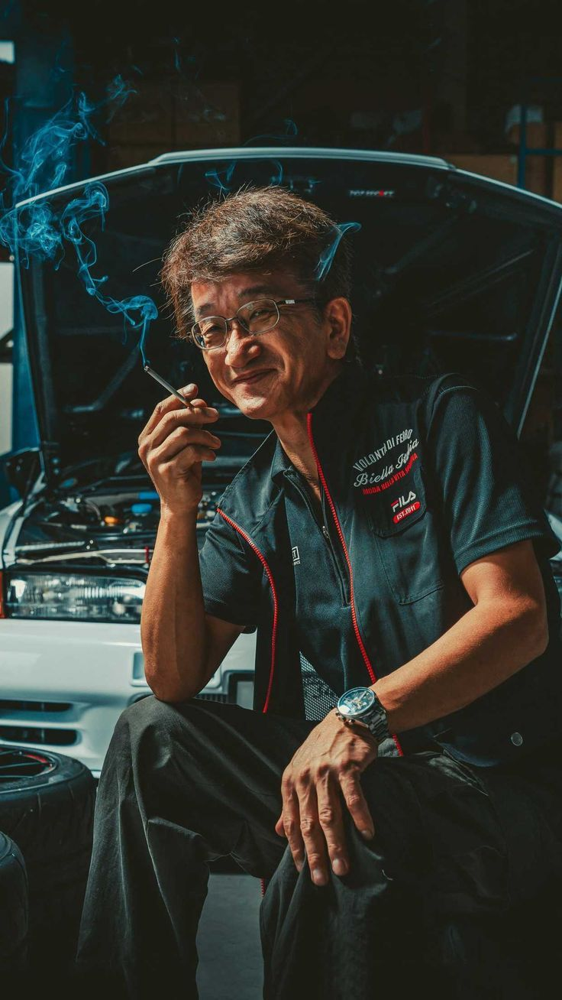

CURIOSIDADES
A sigla JDM significa "Japanese Domestic Market" (Mercado domestico Japonês).
Alguns encontros são realizados em locais divulgados apenas para quem faz parte da cultura.
Smokey Nagata fundador da empresa japonesa Top Secret é considerado o maior tunador JDM do mundo.
Smokey Nagata